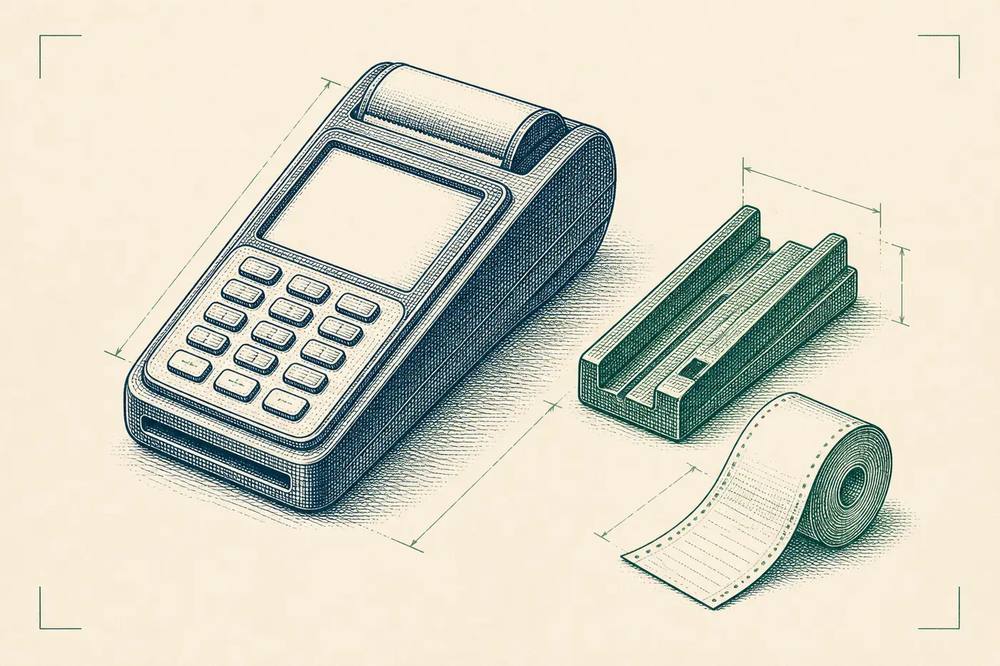
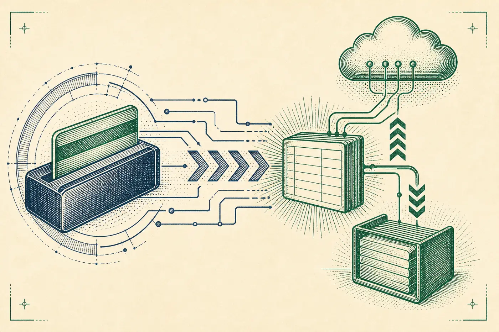
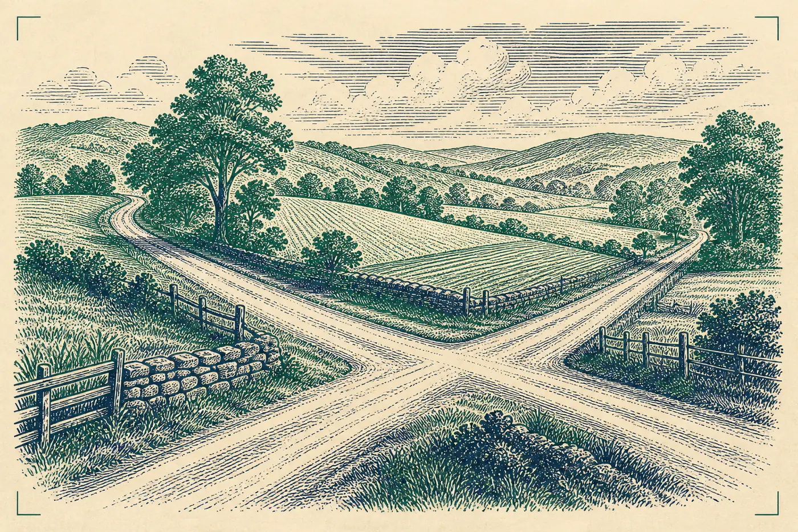

What they actually sell
The live title is “Trusted Partner of Quantic POS.” The offer is cloud POS plus payments: hardware, software, and processing in one program. Credit-card processing is advertised at rates as low as 0% per swipe or dip under their published promotion. This page does not repeat that rate as a promise. It only records that the claim is on their site today.
Who it is for
They speak to restaurants and other counter businesses that need a terminal and a processor, not a portfolio. Exton is the radar city. No branch hours were published in the text we captured, so none appear here.
Schema, corrected
Radar first filed them as a financial advisor. That is the wrong trade. The demo uses a professional-service schema and the line PAY / get paid. If this pack is ever mailed, the pitch is a payments site, not a planning site.


